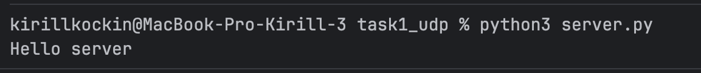
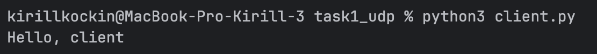
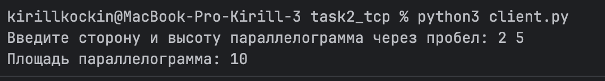
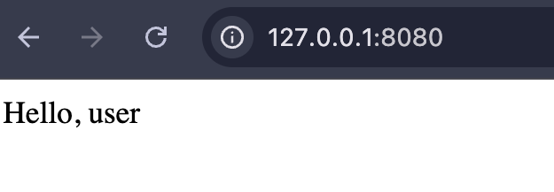
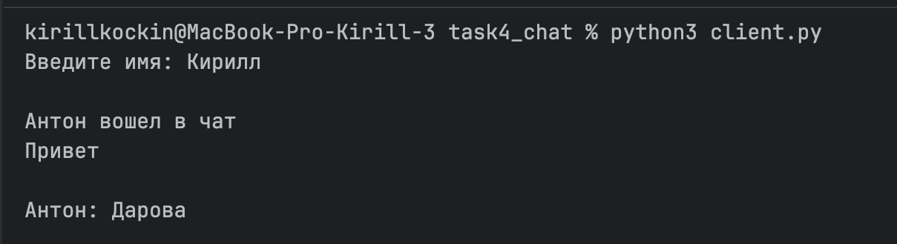
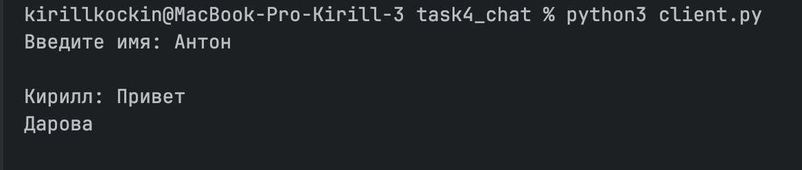
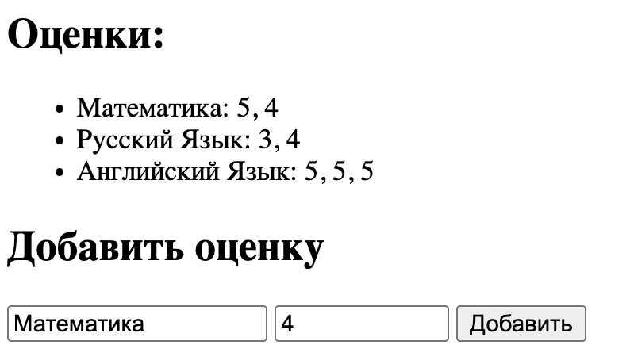
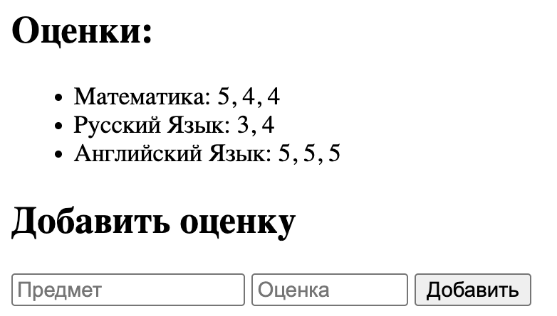

Лабораторная работа №1
Цель работы
Понять принципы межсокетного взаимодейсвтия в вебе. Научиться реализовывать базовую архитектуру клиент-сервер.
Задание 1. Обмен сообщениями по UDP
Описание
UDP (User Datagram Protocol) - это транспортный протокол без установления соединения. Он передаёт данные отдельными датаграммами и не гарантирует доставку, порядок получения и отсутствие потерь.
Сервер
import socket
HOST = "127.0.0.1"
PORT = 8080
server_socket = socket.socket(socket.AF_INET, socket.SOCK_DGRAM)
server_socket.bind((HOST, PORT))
data, client_address = server_socket.recvfrom(1024)
message = data.decode()
print(message)
encode_message = "Hello, client".encode()
server_socket.sendto(encode_message, client_address)
server_socket.close()

Клиент
import socket
HOST = "127.0.0.1"
PORT = 8080
client_socket = socket.socket(socket.AF_INET, socket.SOCK_DGRAM)
server_address = (HOST, PORT)
encode_message = 'Hello server'.encode()
client_socket.sendto(encode_message, server_address)
data, server_address = client_socket.recvfrom(1024)
message = data.decode()
print(message)
client_socket.close()

Задание 2. Вычисления через TCP
Описание
TCP (Transmission Control Protocol) — транспортный протокол с установлением соединения. Он обеспечивает надёжную передачу данных, сохранение порядка сообщений и контроль доставки.
Площадь параллелограмма вычисляется по формуле:
S = a × h
Сервер
import socket
HOST = "127.0.0.1"
PORT = 8080
server_socket = socket.socket(socket.AF_INET, socket.SOCK_STREAM)
server_socket.bind(
(HOST, PORT)
)
server_socket.listen()
while True:
client_socket, client_address = server_socket.accept()
data = client_socket.recv(1024)
parameters = data.decode()
parameters = list(map(int, parameters.split(' ')))
result = parameters[0] * parameters[1]
client_socket.send(str(result).encode())
client_socket.close()
Клиент
import socket
HOST = "127.0.0.1"
PORT = 8080
client_socket = socket.socket(socket.AF_INET, socket.SOCK_STREAM)
client_socket.connect(
(HOST, PORT)
)
parameters = input("Введите сторону и высоту параллелограмма через пробел: ")
client_socket.send(parameters.encode())
data = client_socket.recv(1024)
answer = data.decode()
print("Площадь параллелограмма: " + answer)
client_socket.close()

Задание 3. Раздача HTML-страницы по HTTP
Описание
HTTP (HyperText Transfer Protocol) — протокол прикладного уровня, который используется для обмена данными между клиентом и сервером в вебе.
Сервер принимает TCP-соединение от клиента, получает HTTP-запрос и отправляет в ответ HTML-страницу.
Для ответа сервер формирует HTTP-заголовки:
- статус ответа
200 OK; - тип содержимого
text/html; - кодировку
utf-8; - длину HTML-документа через
Content-Length.
Сервер
import socket
# 127.0.0.1:8080
HOST = "127.0.0.1"
PORT = 8080
server_socket = socket.socket(socket.AF_INET, socket.SOCK_STREAM)
server_socket.bind((HOST, PORT))
server_socket.listen()
with open("index.html", "r", encoding="utf-8") as file:
html = file.read()
print(f"HTTP сервер запущен на {HOST}:{PORT}...")
while True:
client_socket, client_address = server_socket.accept()
request = client_socket.recv(1024)
html_bytes = html.encode("utf-8")
headers = (
"HTTP/1.1 200 OK\r\n"
"Content-Type: text/html; charset=utf-8\r\n"
f"Content-Length: {len(html_bytes)}\r\n"
"\r\n"
)
response = headers.encode("utf-8") + html_bytes
client_socket.sendall(response)
client_socket.close()
HTML-страница
<!DOCTYPE html>
<html lang="en">
<head>
<meta charset="UTF-8">
<title>task number 3 web programming</title>
</head>
<body>
<div>Hello, user</div>
</body>
</html>
Результат работы
После запуска сервера HTML-страница доступна в браузере по адресу:
http://127.0.0.1:8080

Задание 4. Чат на сокетах
Описание
В данной задаче реализован простой клиент-серверный чат с использованием TCP-сокетов.
Сервер принимает подключения от клиентов и обеспечивает обмен сообщениями между ними.
TCP используется потому, что он обеспечивает надёжную передачу данных и сохранение порядка сообщений.
Для каждого подключённого клиента сервер создаёт отдельный поток, поэтому несколько пользователей могут одновременно подключаться к чату и отправлять сообщения.
Сервер
import socket
import threading
HOST = "127.0.0.1"
PORT = 8080
users = []
usernames = {}
def broadcast(message, sender_socket=None):
for u in users:
if u != sender_socket:
u.sendall(message.encode())
def handle_client(client_socket):
username = client_socket.recv(1024).decode()
usernames[client_socket] = username
print(f"{username} вошел в чат")
broadcast(f"{username} вошел в чат", client_socket)
while True:
try:
data = client_socket.recv(1024)
if not data:
break
message = data.decode()
print(f"{username}: {message}")
broadcast(f"{username}: {message}", client_socket)
except:
break
users.remove(client_socket)
usernames.pop(client_socket)
client_socket.close()
print(username + " вышел из чата")
broadcast(username + " вышел из чата")
server_socket = socket.socket(socket.AF_INET, socket.SOCK_STREAM)
server_socket.bind((HOST, PORT))
server_socket.listen()
print("Сервер запущен")
while True:
client_socket, client_address = server_socket.accept()
print("Подключился клиент:", client_address)
users.append(client_socket)
thread = threading.Thread(
target=handle_client,
args=(client_socket,)
)
thread.start()
Клиент
import socket
import threading
HOST = "127.0.0.1"
PORT = 8080
def receive_messages(client_socket):
while True:
try:
data = client_socket.recv(1024)
if not data:
break
print("\n" + data.decode())
except ConnectionResetError:
break
client_socket = socket.socket(socket.AF_INET, socket.SOCK_STREAM)
client_socket.connect((HOST, PORT))
username = input("Введите имя: ")
client_socket.sendall(username.encode())
thread = threading.Thread(
target=receive_messages,
args=(client_socket,),
daemon=True
)
thread.start()
while True:
message = input()
if message == "exit":
break
client_socket.sendall(message.encode())
client_socket.close()


Задание 5. Простой веб-сервер (GET/POST)
Описание
В данной задаче реализован HTTP-сервер для работы с журналом оценок.
Сервер обрабатывает два типа HTTP-запросов:
- GET — возвращает HTML-страницу со списком дисциплин и оценок.
- POST — получает название дисциплины и оценку из HTML-формы и добавляет её в журнал.
HTTP-запрос разбирается вручную. Из первой строки запроса сервер определяет используемый HTTP-метод, путь и версию протокола.
Например вот это:
GET / HTTP/1.1
превращается в вот это:
method = "GET"
path = "/"
version = "HTTP/1.1"
Моковые данные:
evaluations = {
"Математика": [5, 4],
"Русский Язык": [3, 4],
"Английский Язык": [5, 5, 5]
}
Сервер
import socket
from mock import evaluations
# 127.0.0.1:8080
HOST = "127.0.0.1"
PORT = 8080
server_socket = socket.socket(socket.AF_INET, socket.SOCK_STREAM)
server_socket.bind((HOST, PORT))
server_socket.listen()
print(f"HTTP сервер запущен на {HOST}:{PORT}...")
while True:
client_socket, client_address = server_socket.accept()
request = client_socket.recv(1024).decode("utf-8")
print(request)
first_line = request.split("\r\n")[0]
method, path, version = first_line.split()
if method == "GET":
eval_html = "<ul>"
for subject, grades in evaluations.items():
eval_html += f"<li>{subject}: {', '.join(map(str, grades))}</li>"
eval_html += "</ul>"
html = f"""
<html>
<head>
<meta charset="UTF-8">
<title>Журнал с оценками</title>
</head>
<body>
<h2>Оценки:</h2>
{eval_html}
<h2>Добавить оценку</h2>
<form method="POST" action="/" enctype="text/plain">
<input type="text" name="subject" placeholder="Предмет">
<input style="width: 100px;" type="number" name="grade" min="1" max="5" placeholder="Оценка">
<button type="submit">Добавить</button>
</form>
</body>
</html>
"""
html_bytes = html.encode("utf-8")
headers = (
"HTTP/1.1 200 OK\r\n"
"Content-Type: text/html; charset=utf-8\r\n"
f"Content-Length: {len(html_bytes)}\r\n"
"\r\n"
)
response = headers.encode("utf-8") + html_bytes
client_socket.sendall(response)
elif method == "POST":
body = request.split("\r\n\r\n")[1]
lines = body.strip().split("\r\n")
subject = lines[0].split("=")[1]
grade = int(lines[1].split("=")[1])
if subject not in evaluations:
evaluations[subject] = []
evaluations[subject].append(grade)
response = (
"HTTP/1.1 303 See Other\r\n"
"Location: /\r\n"
"Content-Length: 0\r\n"
"\r\n"
)
client_socket.sendall(response.encode("utf-8"))
client_socket.close()
Результат работы
При открытии страницы браузер отправляет GET-запрос. Сервер формирует HTML-страницу и выводит все дисциплины и соответствующие им оценки.
При заполнении формы браузер отправляет POST-запрос с названием дисциплины и оценкой. Если дисциплина уже существует, оценка добавляется в её список. Если дисциплины ещё нет, для неё создаётся новый список оценок.
После обработки POST сервер возвращает ответ 303 See Other, после чего браузер снова переходит на главную страницу и отображает обновлённый журнал.
До добавления:

После:
